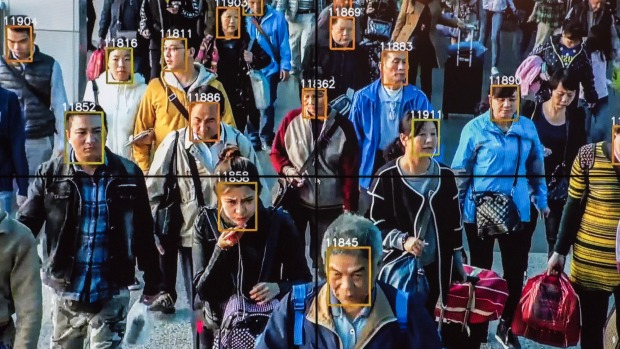

Non Technical Introduction to Machine Learning
Wesam Elshamy, Data Scientist
What is Machine Learning?
Netflix learns your taste in movies.
So does YouTube.
Alexa, Customer service, ...
Facebook, Google Photos, ...
Program that incrementally learn from and
identify patterns in data.
History of Machine Learning
Turing test
Alan Turing (1950).
Computer Checkers
Arthur Samuel @ IBM (1952).

Artificial Neural Networks
Frank Rosenblatt @ Cornell (1957).
NETtalk
Terry Sejnowski @ Cornell (1985).
Deep Blue
Beats Kasparov (1997).

Netflix $1M prize
Winner: BellKor's Pragmatic Chaos (2009).
Project Adam
Beat humans at object identification in images (2014).
Machine learning everywhere
You just may not know it's in use.
Example: K-means
Simple clustering algorithm
Group similar points together. No labels.
Stuart Lloyd (1957) & E Forgy (1965)
Types of Machine Learning Algorithms
Machine Learning at Sweetbridge
New applicant credit risk assessment
Filter out high default risk ones.
Applicant identity verification
Speed up screening and data collection process
Members Analytics
- Who are our members
- Types, volumes, frequency of Transactions?
- Concentration of risk?

What is machine learning good at?
Some computer vision tasks
Suspect identified among 60,000 crowd at concert in China.
Targeted advertising
Kroger's 70+% redemption on customer specific coupons.
Narrow tasks it's designed for
- Identifying dog breeds in photos
- Targeted advertising
- Board games
What isn't machine learning good at yet?
General intelligence tasks
- Generalization of problem solving
- Acting on input not seen before
- Reasoning

Thank You
Q&A